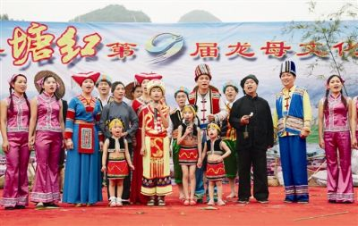
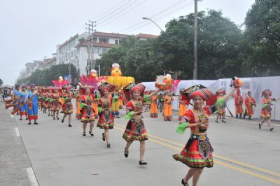
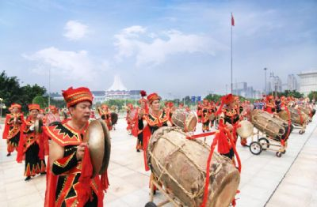

不悔当初
文化
智慧是知识凝结的宝石，文化是智慧放出的异彩。

上林县的“龙母节”是壮族最早的“母亲节”。上林县塘红乡石门龙母文化是珠江流域龙母文化和壮族传统节日“三月三”的源头。相传在原始社会晚期，塘红乡石门村有一个穷苦的寡妇，无儿无女，孤苦零丁。一天清早，她到石南海去挑水，汲水时有一条小蛇游进她水桶来。她忙将水倒回潭中再行汲水。哪知那条小蛇三番五次地游进她水桶来，她只得挑回家，养在水缸中。当她孤独愁闷的时候，小蛇很懂人意，总绕在她脚下，亲热得象她儿子。一次，她正在切猪菜，小蛇……

自从盘古开天地，壮族人民就有自己的聪明才智，创造了形式多样、丰富多彩的舞蹈艺术，具有纯朴、含蓄、欢乐柔情的特点，特别是壮族宗教祭祀类舞蹈是从黄帝时代传承下来的，吸收了壮族人民千百万年来劳动生产、生活风俗习惯的风格特点。反映壮族人民与大自然斗争的精神风貌。如：开坛舞、游衣舞、五龙舞、请师舞、四帅押坛舞、四帅禁坛舞等。其中代表作品：《公曹太平舞》，该舞蹈讲述的是壮族四个管辖天下的元帅，驱邪除恶，为壮族人民带来太平和安康。

马山壮族会鼓历史源远流长。据考证，它始于宋末元初，盛于明清两代。其最初的功能为驱鬼镇妖，外袭警报，祈求吉祥，最后逐渐演变形成壮族民间一种娱乐活动而流传至今。马山壮族会鼓使用的道具主角是鼓，配角是锣和钹。鼓者声音洪亮、浑圆、厚重，钹和锣声则显得十分清脆。会鼓有很多打法，有混鼓打（序曲）、狂欢鼓、舞龙鼓、扁担鼓、花灯鼓等，中间还有各式各样的插曲鼓。敲打时，多人协作，鼓声撼动四面八方。如今，每逢节庆之日或重大的群众活动，会...
不悔当初
| 姓名:马锦骞 | 爱好:听音乐 | QQ:1242462621 |
|---|---|---|
| 性别:男 | 年龄:22 | 邮箱:@qq.com |
座右铭：没有理所当然的成功，也没有毫无道理的平庸。